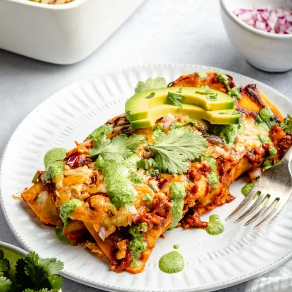

Dreamy Refried Bean Chicken Enchiladas with Homemade Enchilada Sauce

Amazing chicken enchiladas with creamy refried beans, protein-packed chicken, and a homemade enchilada sauce. This delicious, easy chicken enchilada recipe is freezer-friendly and a crowd-pleasing dinner staple!
Enchiladas are known in my family to be the ultimate comfort food. I grew up all my life eating them in a variety of different ways: red sauce, green chile, a tomatillo salsa version, avocado and even sour cream. In my opinion, all enchiladas are worthy of eating.
The first time I made these refried bean chicken enchiladas, one of my besties and fellow food bloggers, Sarah, and I devoured them after a long day of photography and recipes. Our minds were teetering on the verge of delusional and delirious, but our bellies were happier than ever.
Ingredients
For the enchilada sauce:
- 1 tablespoon olive oil
- 1 small white onion, very finely minced or grated
- 4 cloves garlic, minced
- 2-3 tablespoons chili powder
- 1 teaspoon cumin
- 1 teaspoon dried oregano
- 1/4 teaspoon cayenne pepper
- 1 (15 ounce) can tomato sauce
- 1 cup chicken broth
- 2 tablespoons tomato paste
- 1 teaspoon apple cider vinegar
- Salt, to taste
For the enchiladas:
- 2 1/2 cups cooked shredded chicken (breast or thighs work great!)
- 1 (15 ounce) can refried beans (I like to use refried black beans for best flavor)
- 1 1/4 cup shredded colby jack or Mexican cheese, divided
- 1/2 cup shredded pepper jack cheese
- 10 soft corn tortillas
To garnish:
- 1 avocado, sliced or diced
- 1/4 cup fresh chopped cilantro
- 1/4 cup chopped red onion or diced green onion
Directions
- Prepare the enchilada sauce by heating oil in a medium pot over medium high heat. Add in garlic and onions and sauté for 5 minutes or until onions become translucent. Add in chili powder, cumin, oregano and cayenne pepper and stir for 30 seconds to allow the spices to cook a bit. Stir in tomato sauce, broth, tomato paste then bring to a boil. Reduce heat to a medium low and simmer for about 15-20 minutes. Lastly stir in apple cider vinegar, then add salt and pepper to taste. **NOTE: if you don't want to use homemade enchilada sauce, feel free to use 1 (28 ounce) can of red enchilada sauce.
- Preheat oven to 350 degrees F. Grease a 9x13 inch pan with a little olive oil or avocado oil.
- Begin by spreading ¾ cup of enchilada sauce on the bottom of a 9x13 inch baking pan.
- Next, warm up your tortillas so they are easier to roll and to avoid them breaking: I like to microwave mine for 15 seconds on a plate then cover them with a warm towel so they stay warm. Please note it is important to use soft corn tortillas, these are the ones that do not easily break!
- Assemble enchiladas: place 2 tablespoons of refried beans in a corn tortilla, then top with a few tablespoons of shredded chicken, 1 heaping tablespoon of colby jack cheese and 1 tablespoon of enchilada sauce. Roll tortillas up and place seam side down in pan. Repeat with remaining tortillas.
- Next pour remaining enchilada sauce over the top of the tortillas and sprinkle with remaining 1/2 cup of shredded colby jack and 1/2 cup of shredded pepper jack cheese. Bake for 25-30 minutes. Remove from oven and allow to cool for 5 minutes before serving.
- Garnish with avocado, cilantro, red or green onion, if desired. Makes 5 servings, 2 enchiladas each. I also love serving this with my spicy cilantro jalapeno yogurt sauce and it makes the recipe extra pretty, too! Just a little drizzle on top really take it to the next level, but it's up to you.